# Project 6 ## Texture Packing ### Group 26:邓焱，金涣钧，李锋然 #### 2024.12.06 <!--s--> ## Texture Packing ### Overall Preview 1. Problem Introduction 2. Solution Attempt 3. Testing Result 4. Complexity Analysis <!--s--> ### Problem Introduction Texture Packing is to pack multiple rectangle shaped textures into one large texture. The resulting texture must have a given width and a minimum height. <!--v--> ### What is the Nature of the Problem? The Nature of this problem is How to fill a Rectangle box with given samll rectangles. And this is the two-dimensional case of Bin Packing <!--v--> <div class="r-stack"> <img class="fragment" src="./md图片/rec_fill_5.png" width="450" /> <img class="fragment" src="./md图片/rec_fill_4.png" width="450" /> <img class="fragment" src="./md图片/rec_fill_3.png" width="450" /> <img class="fragment" src="./md图片/rec_fill_2.png" width="450" /> <img class="fragment" src="./md图片/rec_fill_1.png" width="450" /> <img class="fragment" src="./md图片/rec_fill_0.png" width="450" /> </div> <!--s--> ### Our Solutions struct we will use ```cpp sturct Rectangle{ int length; int width; }//we make sure that length is always longer than width; struct Container{ int array[GIVENWIDTH]; } ``` <!--v--> ### 1. Just place it in order 1. Recive rectangle 2. put it into container ```cpp[1-2|3|4|7-9|4|5|6|11|] Contaner C;//Construct a container to hold a rectangle, with an initial height of 0. Rectangle R;//Construct a rectangle for assignment. while(true){//The program will continue to run until the output is finished. R = GiveARectangle();//Receive a rectangle from input. if(R.IsNull()){//End of input. break; }else{ PlaceRectangle(R,C);//Put the rectangle into the container and calculate the height of the container. } } std::cout<<C.CalculateHeight()<<std::endl;//Output the answer. ``` <!--v--> <div class="r-stack"> <img class="fragment" src="./md图片/rec_fill_5.png" width="450" /> <p>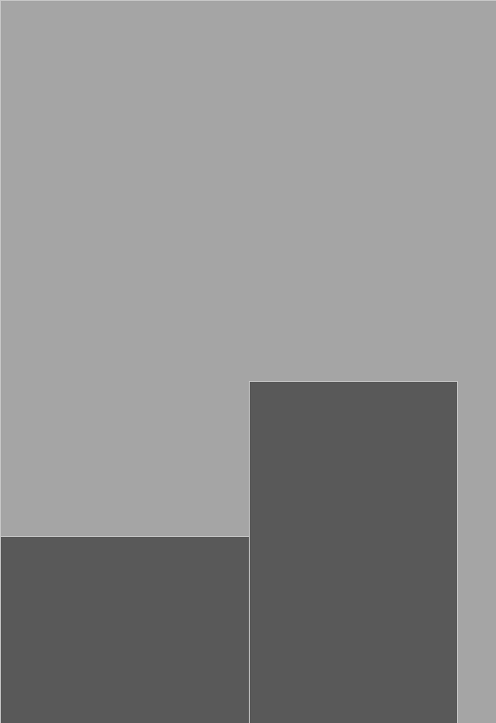</p> <p>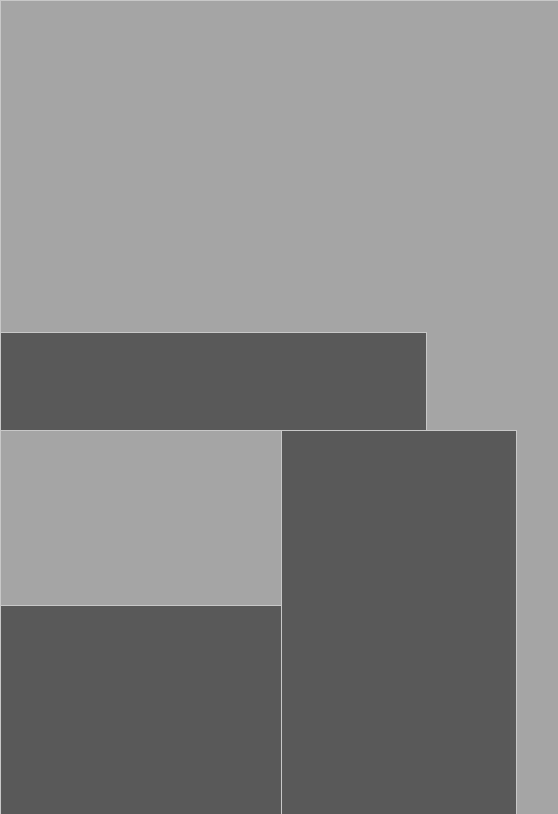</p> <p>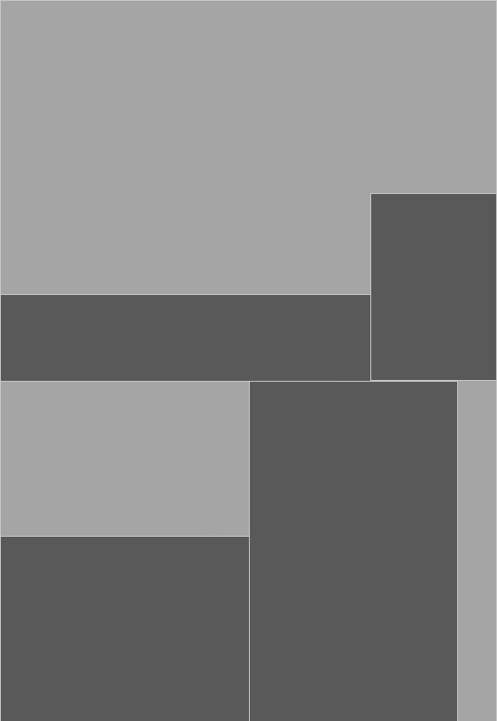</p> </div> <!--v--> ### 2. Sort the rectangles in advance <!--v--> ### 2.1 Sort the rectangles by length 1. First sort the rectangles by length, 2. Insert them in the sorted order. ```cpp[1-2|3|4|5-7|8|] Container C;//Construct a container to hold a rectangle, with an initial height of 0. std::vector<Rectangle> Recs;//This vector is used to contain all rectangles InputRectangles(Recs);//Input all rectangles into this vector SortByLength(Recs);//Sort the rectangles in vector by length for(Rectangle R:Recs){ PlaceRectangle(R,C);//Put the rectangle into the container and calculate the height of the container. } std::cout<<C.CalculateHeight()<<std::endl;//Output the answer; ``` <!--v--> <div class="r-stack"> <img class="fragment" src="./md图片/rec_fill_5.png" width="450" /> <p>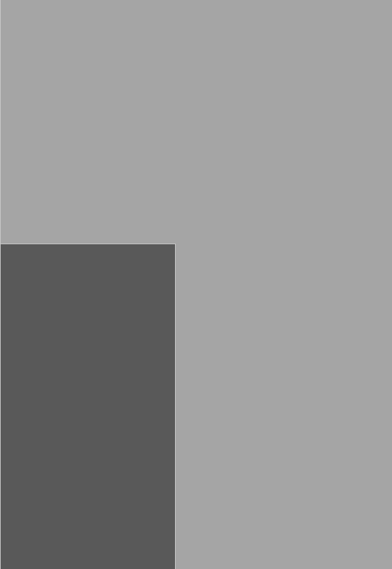</p> <p>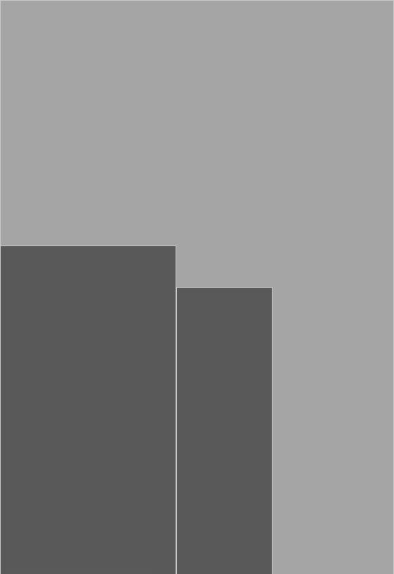</p> <p>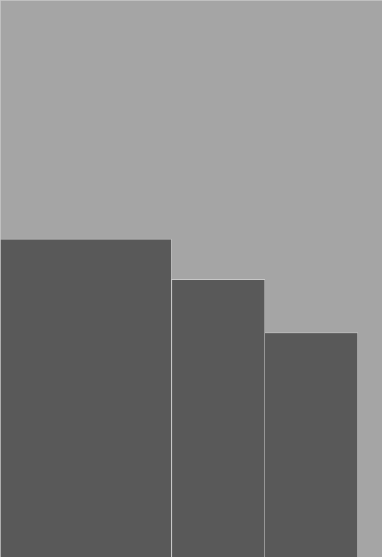</p> <p>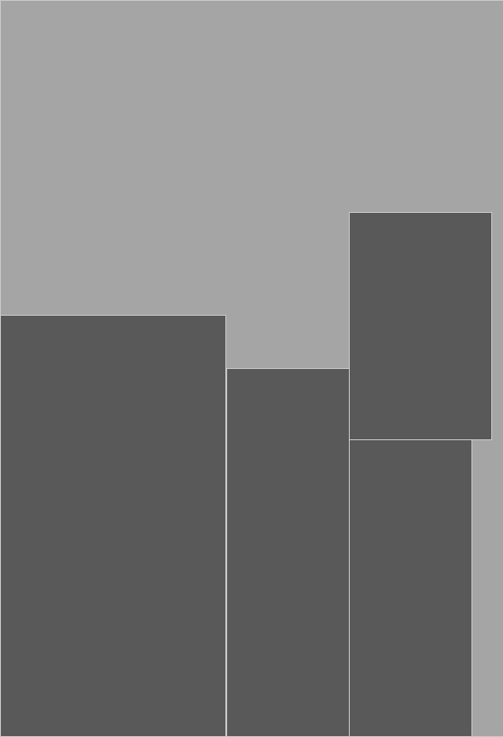</p> </div> <!--v--> ### 2.2 sort the rectangle by width 1. First sort the rectangles by width, 2. Insert them in the sorted order. ```cpp[1-2|3|4|5-7|8|] Container C;//Construct a container to hold a rectangle, with an initial height of 0. std::vector<Rectangle> Recs;//This vector is used to contain all rectangles InputRectangles(Recs);//Input all rectangles into this vector SortByWidth(Recs);//Sort the rectangles in vector by width for(Rectangle R:Recs){ PlaceRectangle(R,C);//Put the rectangle into the container and calculate the height of the container. } std::cout<<C.CalculateHeight()<<std::endl;//Output the answer; ``` <!--v--> <div class="r-stack"> <img class="fragment" src="./md图片/rec_fill_5.png" width="450" /> <p>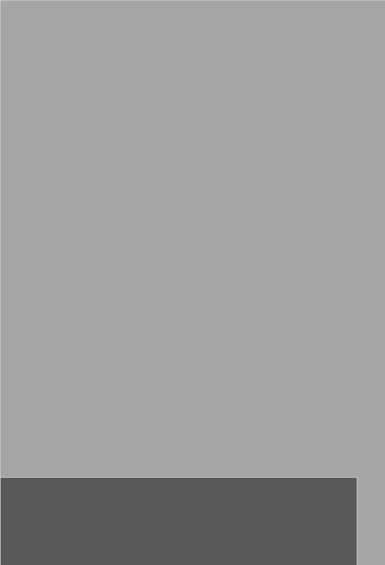</p> <p>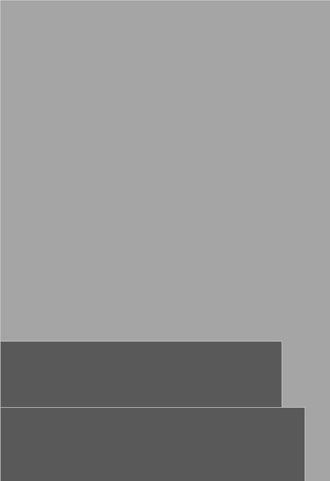</p> <p>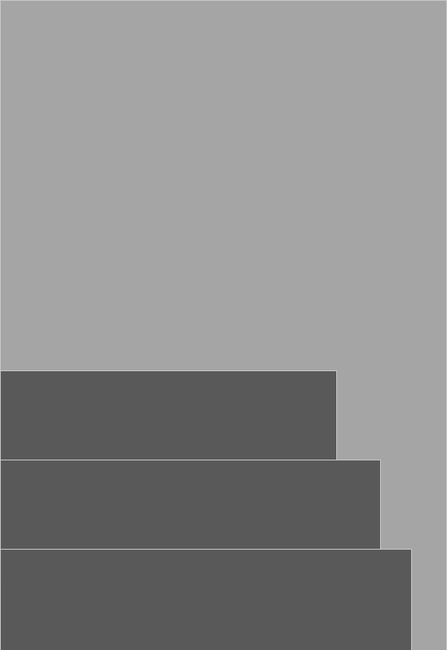</p> <p>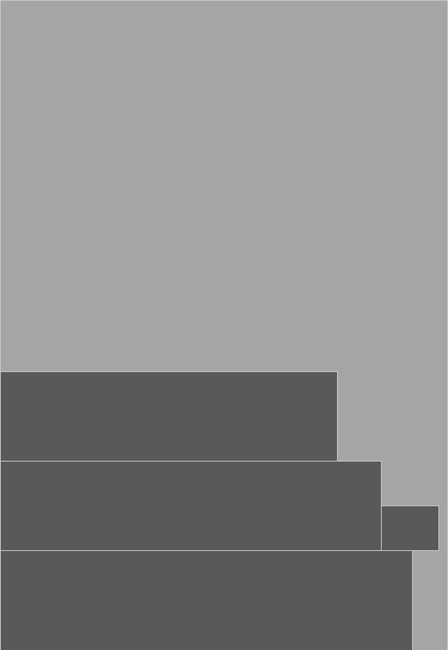</p> </div> <!--v--> ### How does the function work - **PlaceRectangles(Rectangle R,Container C)** - We regard the width of the rectangle as a window that moves from left to right within the Container.Each time the window is moved by a unit length, it is only necessary to determine whether each movement will produce a new minimum maximum height. - **SortByLength(std::vector<Rectangle> Recs)&void SortByWidth(std::vector<Rectangle> Recs)** <!--v--> **void PlaceRectangles();** ```cpp[2|] void PlaceRectangles(Rectangle R,Container C){ start = FindPlaceFor(R,C);//find the place to hold R; set(start,start+R.width,R.length);//all height between start and end index will add the length of rectangle } ``` <!-- <img src="./md图片/code_1.png" height=350/> --> ```cpp[2-3|4|5-7|8-10|13|] int FindPlaceFor(R,C){ int MinHeight = C[0],Start = 0; //MinHeight represents the minimum value of the maximum height of all sliding windows for(int i=0;i<GIVENWIDTH-R.width;++i){ if(Check(C,i,R.width)){ //if ith element is about to disappear from the sliding window is equal to the current MinHeight, //and the element((i+R.width)th) newly added to the sliding window is smaller than MinHeight int NewMin = Update(MinHeight); start = i+1; MinHeight = NewMin; } } return Start; } ``` <!--v--> **void SortByLength();** ```cpp void SortByLength(std::vector<Rectangle> Recs){ std::sort(Recs.begin(),Recs.end(),[](const Rectangle& a,const Rectangle& b){ return a.length > b.length; })//Use the sort of the C++ standard library and the lambda function for sorting } ``` <!--v--> ### 3. Next Fit 1. Recive a rectangle 2. Check if previous container can hold it. 3. If precious container have enough space for the rectangle, put it into the container. Otherwise, calculate the Height of previous container and clean the container. <!--v--> ```cpp[1-3|4|5-6|7|4|5-6|8-10|] int Container = 0;//We just need to know the loading width of the container Rectangle R;//To receive input rectangle int TotalHeight = 0;//Record the height while(inputRectangle(R)){ if(HasPlace(Container,R)){ //If previous Container has enough space, we put the rectangle into it directly PlaceRectangle(R,Container); }else{ TotalHeight += CalculateHeight(Container); Container = 0; } } ``` <!--v--> <div class="r-stack"> <img class="fragment" src="./md图片/rec_fill_5.png" width="450" /> <p>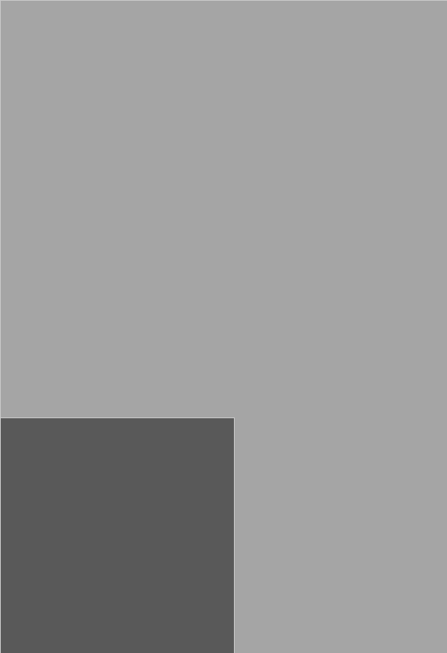</p> <p>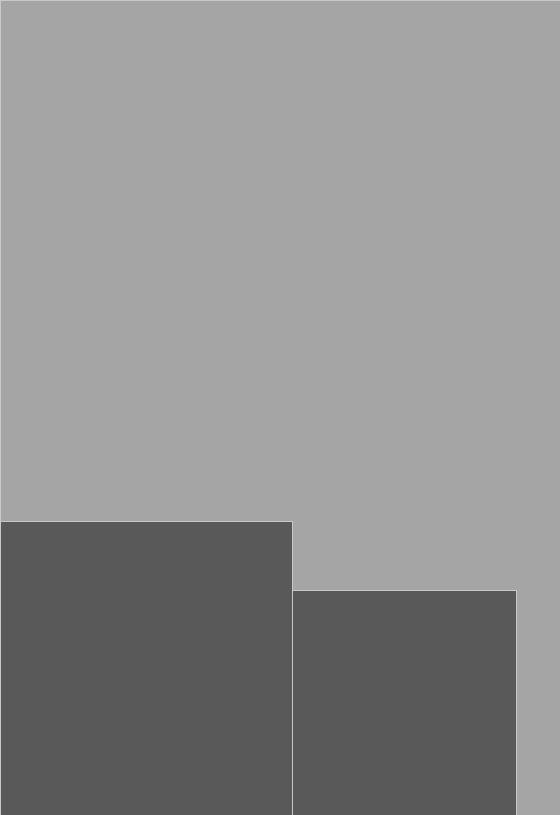</p> <p>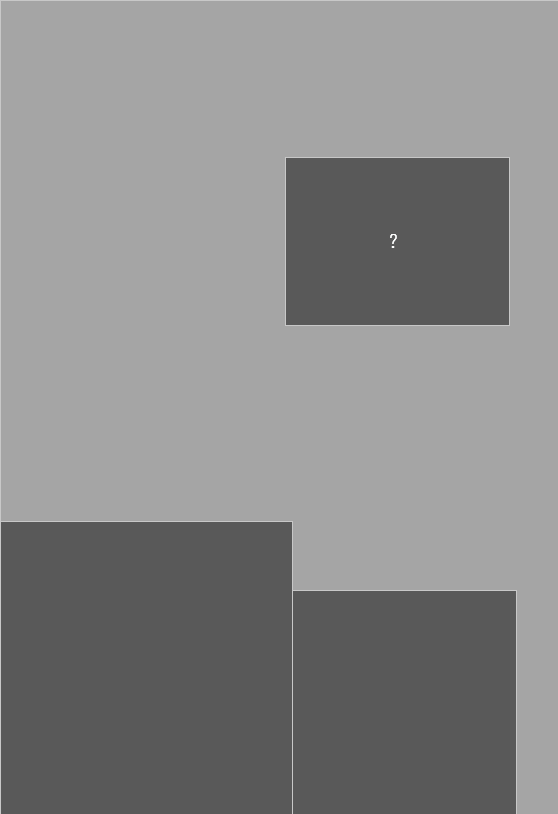</p> </div> <!--v--> ### 4. First Fit 1. Recive a rectangle 2. Find a container can hold the rectangle 3. If find a container, we put the rectangle into the container.Otherwise, we create a new container and put the rectangle into the new container <!--v--> ```cpp[1-2|3|4|5|13-14|15-16|3|4|5|6-7|8-9|10|] std::vector<int> ContainerArray;//every element represent the loading width of the container Rectangle R;//To receive input rectangle while(InputRectangle(R)){ bool NeedNewContainer = True; for(auto Container:ContainerArray){ if(HasPlace(Container,R)){ //if we find a place to hold the container, we will directly put it into container. PlaceRectangle(R,C); NeedNewContainer = False; break; } } if(NeedNewContainer){ //if we can't find a place for the rectangle, we create a new container, and put it into new container ContainerArray.push_back(0); PlaceRectangle(R,C); } } ``` <!--v--> <div class="r-stack"> <img class="fragment" src="./md图片/rec_fill_5.png" width="450" /> <p>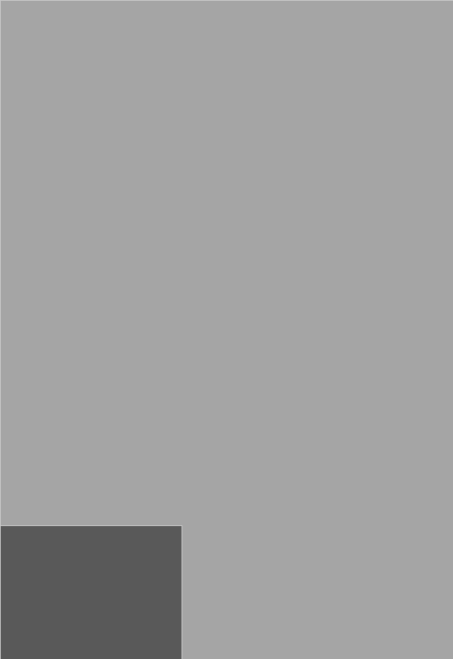</p> <p>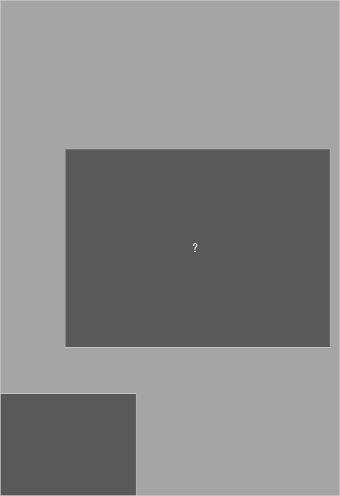</p> <p>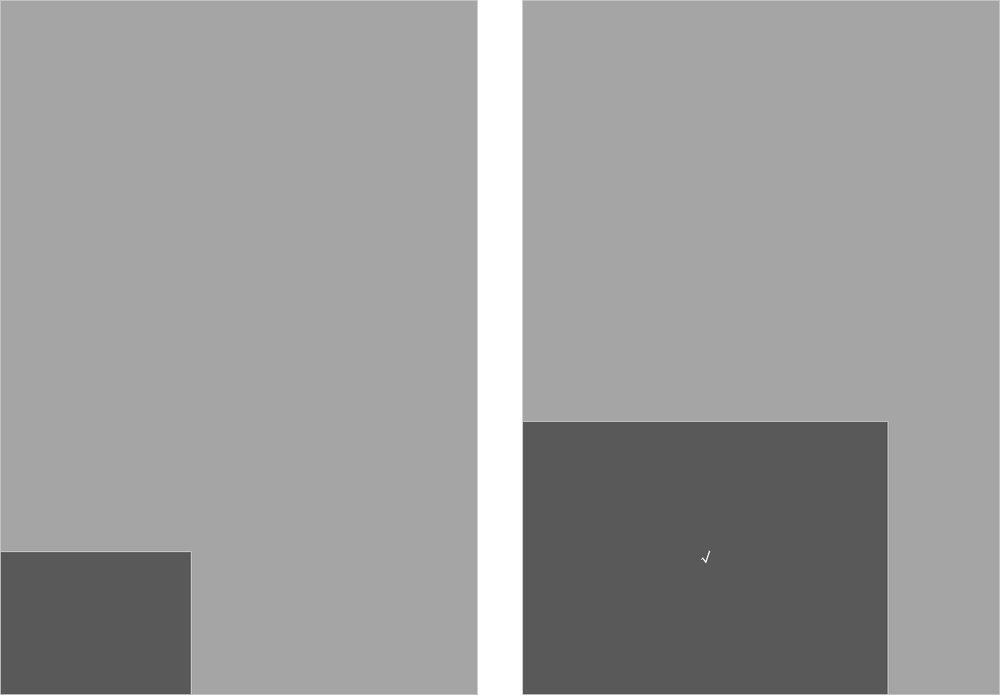</p> <p>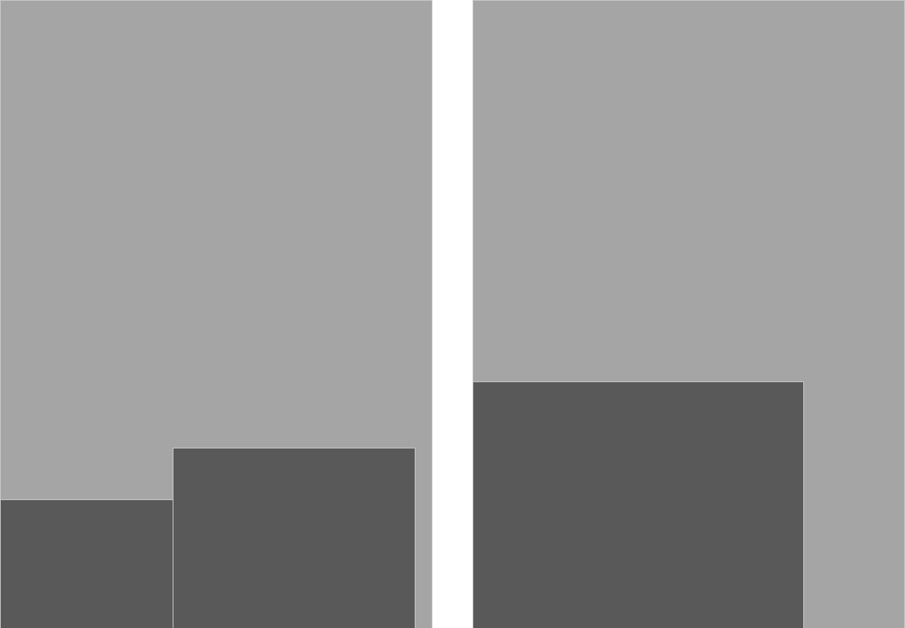</p> <p>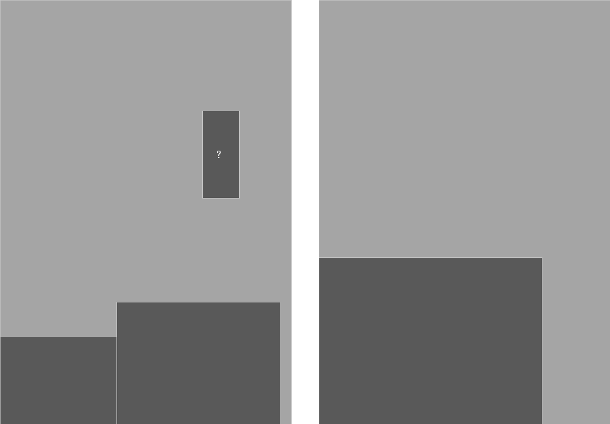</p> <p>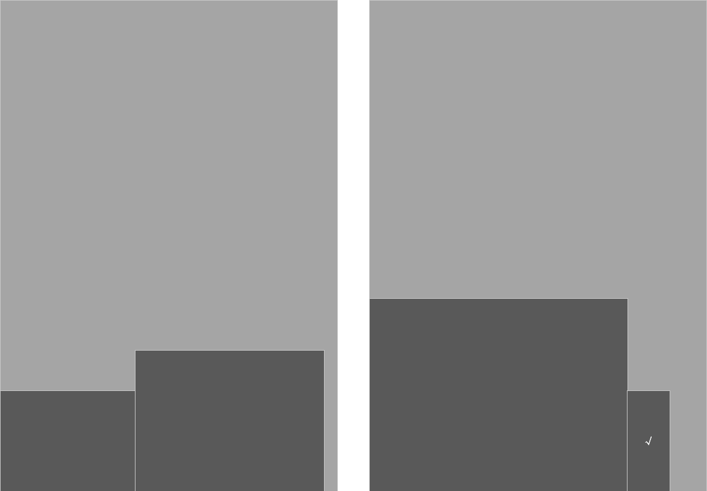</p> </div> <!--v--> ### 5. best Fit 1. Recive a rectangle 2. Search for every container, find the best positon for the rectangle to place. <!--v--> ```cpp[1-2|3|4|5|13|15-18|3|4|5|6-7|8-10|13|14|] std::vector<Container> ContainerArray;//every element represent the loading width of the container Rectangle R;//To receive input rectangle while(InputRectangle(R)){ Container* Position = nullptr;//Record which container will be loaded. for(auto Container:ContainerArray){ if(HasPlace(Container,R)){ //if we find a place to hold the container, we will directly put it into container. if(IsBetterPosition(Container,R)){ Position = &Container; } } } if(Position != nullptr){ PlaceRectangle(R,*Pisition);//Put the rectangle to the best container; }else{ //if we can't find a place for the rectangle, we create a new container, and put it into new container ContainerArray.push_back(0); PlaceRectangle(R,C); } } ``` <!--v--> ### How to define ***Best***? ```We use the proportion of container area used to measure the quality of the strategy ``` <!--v--> <p>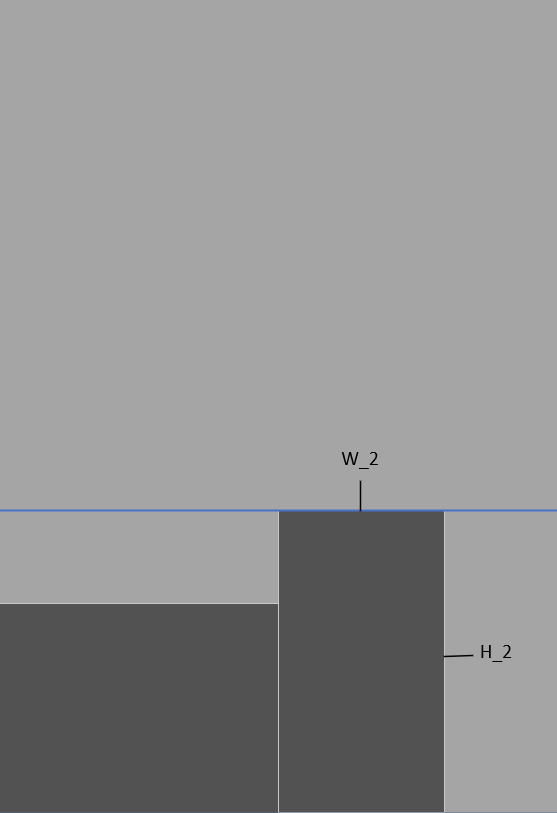</p> \ \ \ ```The closer the ratio is to 1, the less space is wasted on padding.```\ \ \ $ P = \frac{\sum_{R \in Container}S_R}{Maxheight*GIVENWIDTH} $ <!--v--> ### 6. Skyline Heuristic ```This algorithm is our code reproduction of the paper "A skyline heuristic for the 2D rectangular packing and strip packing problems" ``` <!--v--> **Algorithm Flow** 1. Calculate the theoritical optimal solution 2. Set a upper bound and find solution. 3. If a solution is found, then this solution and the optimal solution are bisected as the new bound and return to (2.).Otherwise expand the upper bound return to (2.). <!--v--> ```cpp[1-4|5-6|7-8|11-13|5-6|7-8|9-10|5-6|15|] int LB = CalculateOptimalSolution(); //Theratical optimal solution, equals to the sum of rectangle area divide the given width int UB = 2*LB;//Set a upper bound int Height = 0;//Record answer while(TimeNotExceed()&&UB != LB){ //If time of the algorithm exceed the time we set or upper bound is equal to the LB, we will exit; if(FindSolution(UB)){ //A heuristic algorithm, we use the code already implemented above Height = UB; UB = (UB + LB)/2;//Binary reduction }else{ UB *= 2; } } return Height; ``` <!--s--> ### Testing Result We set the container width to **100** and continuously adjust **the upper limit of the side length of the randomly generated rectangle** to test the effect of our algorithm in different situations. <!--v--> ### Solution 1&2 with input rectangles upper bound is 50 <p>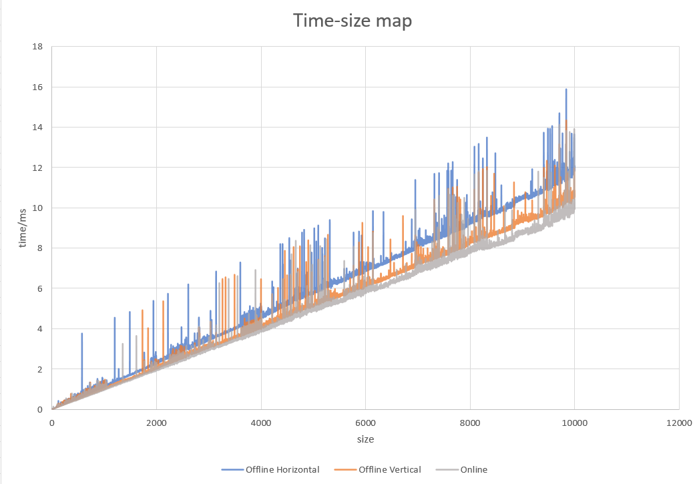</p> <!--v--> ### Next fit&First fit&Best fit with input rectangles upper bound is 50 <p>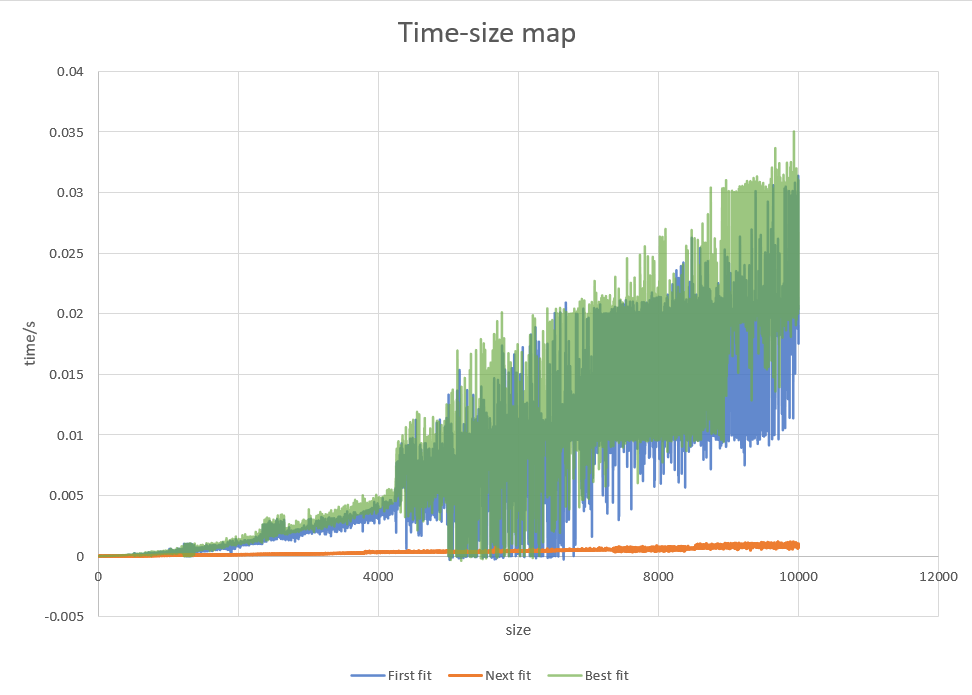</p> <!--v--> ### Approximation of our algorithms with different bound <div class="r-stack"> <p>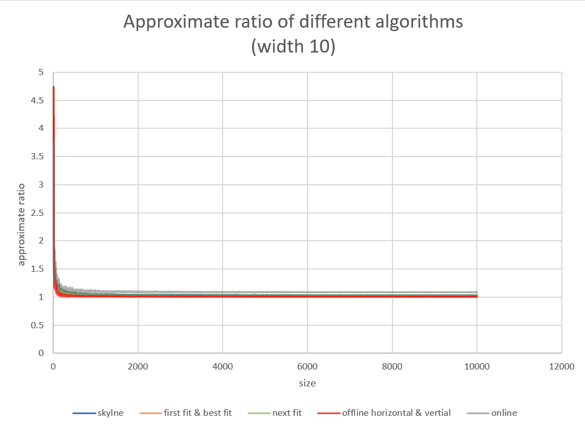</p> <p>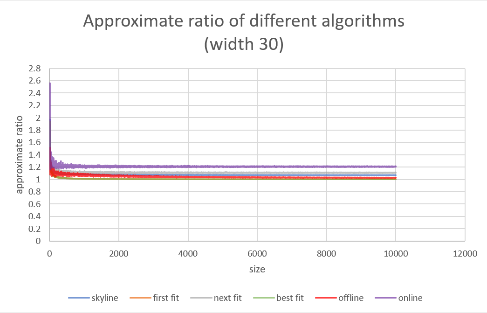</p> <p>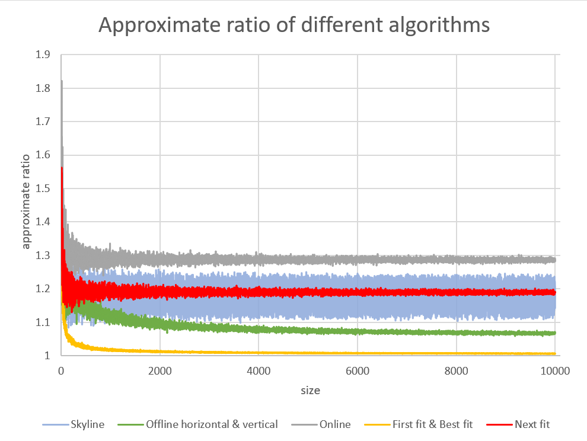</p> <p>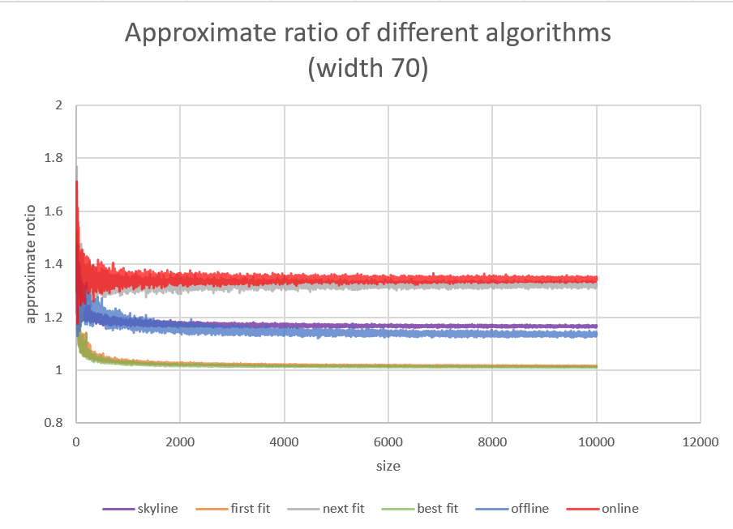</p> <p>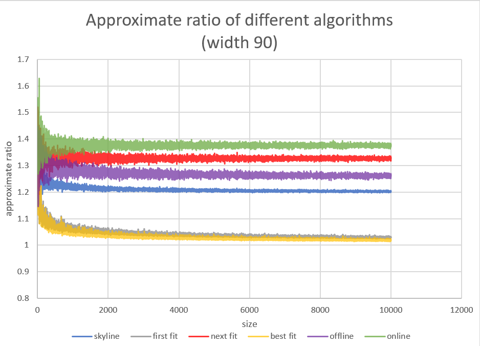</p> <p>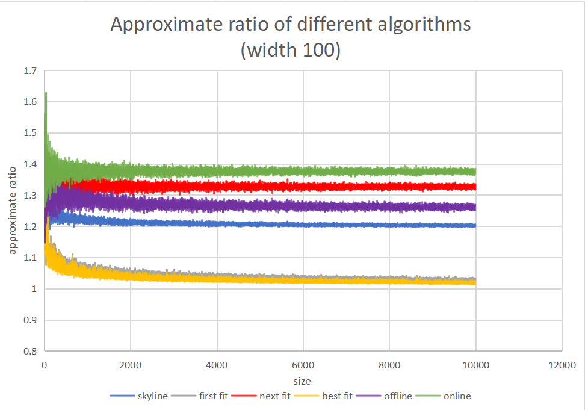</p> </div> <!--v--> ### Changes in approximation ratio <p>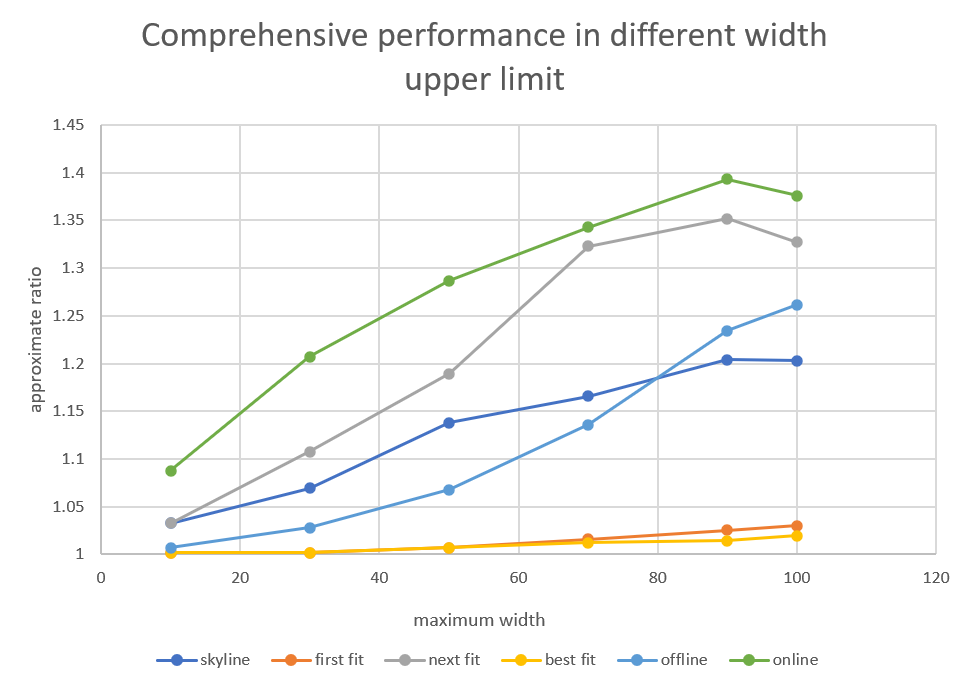</p> <!--s--> ### Complexity Analysis <!--v--> ### Solution 1 <!-- This is the simplest online algorithm, The main time cost is the **PlaceRectangle()** function. Every time we put a rectangle into container, this function will use $O(W*R.w)=O(W)$ time, where W is the width of the container, R.w is the width of rectangle. >Time Complexity: $O(N*W) = O(N)$\ >Approximation ratio: $\rho(n) = $ --> This algorithm places each rectangle at the **lowest and leftmost position** in the container. Below is a detailed analysis of its time complexity, space complexity, and approximation ratio. <!--v--> #### **Time Complexity Analysis** 1. **Complexity of PlaceRectangle()** - The `PlaceRectangle()` function is responsible for finding the position where the rectangle can be placed and updating the container's state. - In the worst case, the algorithm needs to scan the entire width `W` of the container to find the lowest and leftmost position. - The time complexity for placing a single rectangle is: $$ O(W) $$ 2. **Total Time Complexity** - If there are `N` rectangles to be placed, the algorithm calls `PlaceRectangle()` `N` times. - Therefore, the total time complexity is: $$ O(N * W) $$ <!--v--> #### **Space Complexity Analysis** 1. **Input Data Storage** - The algorithm only need store exactly `1` rectangle (width and height), resulting in a space complexity of: $$ O(1) $$ 2. **Container State Representation** - The state of the container can be represented as an int array which takes: $$O(W) $$ 3. **Total Space Complexity** $$ O(1) $$ <!--v--> #### **Approximation Ratio Analysis** 1. **Optimal Solution (OPT)** - The theoretical lower bound for the optimal solution's height is: $$ H_{opt} = \lceil \frac{S_{total}}{W} \rceil $$ where $S_{total}$ is the total area of all rectangles, and `W` is the container's width. 2. **Algorithm Solution (A)** - The algorithm cannot predict the sizes and shapes of future rectangles, which could lead to fragmentation and wasted space. - The height of the solution produced by the algorithm, $H_{alg}$, is generally larger than $H_{opt}$. <!--v--> 3. **Approximation Ratio Formula** - The approximation ratio is defined as: $$ \rho(n) = \frac{H_{alg}}{H_{opt}} $$ 4. **Worst-Case Approximation Ratio** - In the worst case, the algorithm may create significant fragmentation: - For example, if all rectangles have a width close to half the container's width, the other half may remain unused. - In such cases, the algorithm's height can approach twice the optimal height: $$ \rho(n) \leq 2 $$ <!--v--> #### **Summary** - **Time Complexity**: $$ O(N * W) $$ - **Space Complexity**: $$ O(1) $$ - **Approximation Ratio**: - Worst-case approximation ratio: $$ \rho(n) \leq 2 $$ <!--v--> ### Solution 2.1&Solution2.2 <!-- This two algorithm are both offline, by pre-adjusting the input data, the approximation ratio of these two algorithms is much better than the first online algorithm.The main time cost is sorting the data and put the data into container in order.We use the std::sort in C++ library which has time complexity of $O(N\log{N})$ and the the time complexity of put the rectangles into container is $O(N)$ according to Solution 1. >Time Complexity: $O(N\log{N})+O(N) = O(N\log{N})$ >Approximation ratio: $\rho(n) = $ --> These two algorithms are **offline algorithms**, they preprocess the input data (all rectangles) before placing them into the container. Both algorithms sort the rectangles based on certain criteria (e.g., width or height) and then insert them in sequence. Compared to the first online algorithm, the approximation ratio of these offline algorithms is significantly better due to the pre-adjustment of input data. Below is the detailed analysis of their time complexity, space complexity, and approximation ratio. <!--v--> #### **Time Complexity Analysis** 1. **Sorting the Rectangles** - Both algorithms use the `std::sort` function from the C++ Standard Library to sort the rectangles based on width or height. - The time complexity of `std::sort` is: $$ O(N \log{N}) $$ 2. **Placing Rectangles** - After sorting, the rectangles are placed into the container one by one in a sequential manner, similar to Solution 1. - As analyzed in Solution 1, the time complexity of placing a single rectangle is `O(W)`. Thus, placing all `N` rectangles has a total time complexity of: $$ O(N) $$ <!--v--> 3. **Total Time Complexity** - The total time complexity of the algorithm is dominated by the sorting step: $$ O(N \log{N}) + O(N) = O(N \log{N}) $$ <!--v--> #### **Space Complexity Analysis** 1. **Input Data Storage** - The algorithm needs to store the dimensions of `N` rectangles (width and height). This requires: $$ O(N) $$ 2. **Container State Representation** - Use a int array to present the height of the container. The space complexity is: $$ O(W) $$ 3. **Total Space Complexity** $$ O(N + W) $$ <!--v--> ### Solution 3 #### **Next-Fit Algorithm** 1. **Steps**: - For each rectangle, the algorithm checks whether it fits into the current container. - If it fits, it is placed in the current container. Otherwise, the current container is finalized (height calculated) and a new container is started. 2. **Time Complexity**: - **InputRectangle(R)**: Reading the input rectangle takes **O(1)** per rectangle. - **HasPlace(Container, R)**: Checking whether the rectangle fits into the container is a constant-time operation, **O(1)**. - **PlaceRectangle(R, Container)**: Placing the rectangle is **O(1)**. - **CalculateHeight(Container)**: Calculating the container height is **O(1)**. - These operations are repeated for all `n` rectangles. - **Total Time Complexity**: **O(n)**. <!--v--> **Space Complexity**: - The algorithm uses a single container variable and a height counter. There are no additional data structures. - **Space Complexity**: **O(1)**. <!--v--> ### Solution 4 #### **First-Fit Algorithm** 1. **Steps**: - For each rectangle, the algorithm iterates over the existing containers to find the first container where it fits. - If no suitable container is found, a new container is created. 2. **Time Complexity**: - **InputRectangle(R)**: Reading the input rectangle takes **O(1)** per rectangle. - **HasPlace(Container, R)**: Checking if the rectangle fits into a container is **O(1)**. - In the worst case, we iterate through all existing containers to find a suitable one. If there are `k` containers, this takes **O(k)**. - For `n` rectangles, the worst case is **O(1 + 2 + 3 + ... + n) = O(n^2)**. - **PlaceRectangle(R, C)**: Placing the rectangle is **O(1)**. - **Total Time Complexity**: **O(n^2)** in the worst case. <!--v--> **Space Complexity**: - The algorithm uses a vector `ContainerArray` to store the width of each container. In the worst case, each rectangle creates a new container, so the vector size can grow to **n**. - **Space Complexity**: **O(n)**. <!--v--> ### solution 5 #### **Best-Fit Algorithm** 1. **Steps**: - For each rectangle, the algorithm iterates over all existing containers to find the one that leaves the least remaining space after placing the rectangle. - If no suitable container is found, a new container is created. 2. **Time Complexity**: - **InputRectangle(R)**: Reading the input rectangle takes **O(1)** per rectangle. - **HasPlace(Container, R)**: Checking if the rectangle fits into a container is **O(1)**. - **IsBetterPosition(Container, R)**: Determining whether the current container is better than the previously chosen container is **O(1)**. - In the worst case, we iterate through all existing containers to find the best fit. If there are `k` containers, this takes **O(k)**. - For `n` rectangles, the worst case is **O(1 + 2 + 3 + ... + n) = O(n^2)**. - **PlaceRectangle(R, C)**: Placing the rectangle is **O(1)**. - **Total Time Complexity**: **O(n^2)** in the worst case. <!--v--> **Space Complexity**: - Similar to First-Fit, the algorithm uses a vector `ContainerArray` to store the width and height of each container. In the worst case, the vector size can grow to **n**. - **Space Complexity**: **O(n)**. <!--v--> ### Skyline Heuristic #### Code Complexity Analysis 1. **Time Complexity** - **`CalculateOptimalSolution()`**: - This function calculates the theoretical optimal solution, which is the sum of all rectangle areas divided by the given width. Assuming `n` is the number of rectangles, calculating the total area of all rectangles has a time complexity of \(O(n)\), and dividing by the width has a time complexity of \(O(1)\). Therefore, the time complexity of `CalculateOptimalSolution()` is \(O(n)\). - **`FindSolution(UB)`**: - This function uses an already implemented algorithm to try to find a solution with a height not exceeding `UB`. Assuming the time complexity of `FindSolution(UB)` is \(O(f(n, UB))\), where `f(n, UB)` is n². <!--v--> - **`while(TimeNotExceed() && UB != LB)`**: - This loop continues to execute until the time exceeds the set time limit or `UB` equals `LB`. In each iteration, `FindSolution(UB)` is called once, with a time complexity of \(O(f(n, UB))\). - Each time a solution is successfully found, `UB` is halved, i.e., `UB = (UB + LB) / 2`. This is similar to a binary search process. Assuming the initial `UB` is `2 * LB`, it would take at most \(O(log(UB / LB))\) iterations for `UB` to equal `LB`. - Therefore, the overall time complexity of the `while` loop is: $$ O(\log(UB / LB) \cdot n²) $$ - **Total Time Complexity**: - Combining the above analyses, the total time complexity is: - $$ O(n + log(UB / LB) \cdot n² ) $$ <!--v--> 2. **Space Complexity** - **`CalculateOptimalSolution()`**: - This function requires only constant extra space to store intermediate results, so its space complexity is \(O(1)\). - **`FindSolution(UB)`**: - Assuming the space complexity of `FindSolution(UB)` is \(O(g(n, UB))\), where `g(n, UB)` is n. - **`while(TimeNotExceed() && UB != LB)`**: - In this loop, each call to `FindSolution(UB)` consumes \(O(g(n, UB))\) space. Since `UB` is halved in each successful iteration, in the worst case, each call to `FindSolution(UB)` may require new space, but this space is released after each call. - Therefore, the overall space complexity of the `while` loop mainly depends on the space complexity of `FindSolution(UB)`, which is \(O(g(n, UB))\). <!--v--> - **Total Space Complexity**: - Combining the above analyses, the total space complexity is O(n)\. <!--v--> #### Summary - **Time Complexity**: $$ O(n + log(UB / LB) \cdot n²) $$ - **Space Complexity**: $$ O(n) $$ The specific values of `f(n, UB)` and `g(n, UB)` depend on the implementation details of `FindSolution(UB)`. If `FindSolution(UB)` has high time or space complexity, it can significantly impact the overall performance of the algorithm. <!--v--> #### Additional Notes It's worth noting that the current logic in the code has a potential issue: if `FindSolution(UB)` fails, `UB` is doubled, which could lead to an exponential increase in the search space and potentially miss the optimal solution. A more appropriate approach might be to adjust the lower bound `LB` instead of doubling `UB`, such as setting `LB = (UB + LB) / 2` and keeping `UB` unchanged, to continue the search within a narrower range. <!--s--> <h2 class="r-fit-text">THANKS FOR LISTENING</h2>